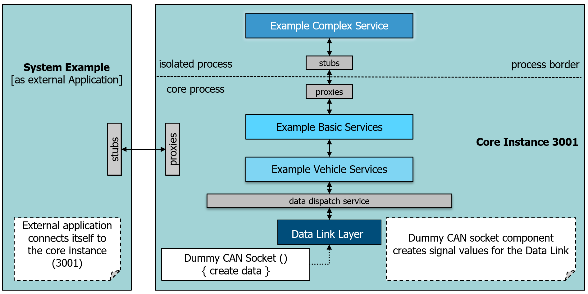

Application connected to core instance#
In <outputfolder>/bin start the instance 3001 with following parameter: sdv_control STARTUP --instance3001.
When the instance is running the application system_demo_example can be started as external application, meaning not loading the components but to connect to the running instance.
In <outputfolder>/examples/bin start the application with following parameter: sys_demo_example -f../../bin --instance3001 --connect.
the following shows the system:
This code shows the basic code to connect to a running instance. It tries to connect to the example with the instance 3001. If successful it will get the interface of the :Complex Service. It would also be possible to get the interfaces of the :Basic Service.
#include <iostream>
#include <string>
#include <filesystem>
#include "control.h"
#include "countersteering.h"
/**
* @brief check if SDV_FRAMEWORK_RUNTIME environment variable exists
* @return Return true if environment variable is found otherwise false
*/
bool IsSDVFrameworkEnvironmentSet()
{
const char* envVariable = std::getenv("SDV_FRAMEWORK_RUNTIME");
if (envVariable)
{
return true;
}
return false;
}
#if defined(_WIN32) && defined(_UNICODE)
extern "C" int wmain()
#else
extern "C" int main()
#endif
{
uint32_t uiInstance = 3001;
sdv::app::CAppControl appcontrol;
if (!IsSDVFrameworkEnvironmentSet())
{
// if SDV_FRAMEWORK_RUNTIME environment variable is not set we need to set the Framework Runtime directory
appcontrol.SetFrameworkRuntimeDirectory("../../bin");
}
appcontrol.AddModuleSearchDir("../../bin");
std::stringstream sstreamAppConfig;
sstreamAppConfig << "[Application]" << std::endl;
sstreamAppConfig << "Mode=\"External\"" << std::endl;
sstreamAppConfig << "Instance=" << uiInstance << std::endl;
sstreamAppConfig << "Retries=" << 10 << std::endl;
sstreamAppConfig << "[Console]" << std::endl;
sstreamAppConfig << "Report=\"Verbose\"" << std::endl;
// Start the framework as external application, which wants to connect to instance 3001
if (!appcontrol.Startup(sstreamAppConfig.str()))
{
std::cout << "appcontrol.Startup() failed." << std::endl;
return false;
}
auto pCounterSteeringSvc = sdv::core::GetObject("Counter Steering Example Service").GetInterface<ICounterSteeringService>();
if (!pCounterSteeringSvc)
{
std::cout << "\nERROR: Could not get 'ICounterSteeringService', connection to " << std::to_string (uiInstance) << "probably failed.\n" << std::endl;
return false;
}
std::cout << "\nSUCCESS: Got 'ICounterSteeringService', could connect to instance." << std::to_string (uiInstance) << "\n" << std::endl;
return true;
}
Just start the sdv::app::CAppControl with a configuration instead of an empty string. Set Mode = External and Instance to the instance number the application has to connect to.